Markers measure the actual relationship between two individuals, not the one expected from the pedigree, and with it you can predict the value of an individual that was never evaluated. Block 11 checks the markers, builds the genomic relationship matrix, fits GBLUP with the genomic heritability and the marker effects, measures by cross-validation how well it predicts and how much is gained per year, and predicts every possible single cross between two heterotic groups.
Block 11 works with a marker file and, depending on the question, with phenotypes of individuals or with evaluated hybrids. The phenotypes can come with the example, from a file of your own or from the Block 3 trial, if its entries have markers. Everything is computed in the browser: with 600 lines and 1,200 markers, GBLUP takes a few seconds, and a cross-validation with 5 folds and 2 replicates, about fifteen.
| Card | What it gives |
|---|---|
| 1 · Markers | Reading of any common coding, quality control, imputation, allele frequencies and population structure |
| 2 · Genomic relationships | VanRaden’s G matrix (methods 1 and 2), a ridge to invert it and an optional blend with the Block 10 pedigree |
| 3 · GBLUP: genomic values | Components by REML, genomic heritability, genomic value of each individual and marker effects |
| 4 · Cross-validation and response per year | Predictive ability for new individuals and genetic gain per year, phenotypic against genomic |
| 5 · Hybrid prediction | GCA of two heterotic groups (and SCA), all single crosses, T2, T1 and T0 validation, three-way and double crosses |
| 6 · Assumptions, formulas and references | The models, their formulas and the references |
| Example | Data | Used for |
|---|---|---|
| CIMMYT wheat: 599 lines, 1279 DArT, 4 environments | Standardized yield of 599 lines in four environments (Crossa and colleagues, 2010) | Cards 1 to 4: the thread of the chapter |
| Dent × Flint maize: 1254 hybrids | 123 dent and 86 flint lines with 2,000 SNPs; 1,254 of their 10,578 crosses evaluated (Technow and colleagues, 2014) | Card 5 |
| Simulated: 300 lines, 1000 SNPs, h² = 0.4 | Doubled-haploid lines with 60 QTL off the panel; the true value is known | Checking GBLUP and the validation |
| Simulated: two-group hybrids, 200 of 750 | 30 × 25 lines, 100 QTL with dominance; the true value of the 750 crosses is known | Checking hybrid prediction |
Card 1 · Markers reads one row per individual, with its identifier in the first column and one column per marker; if the file comes the other way around, the checkbox Markers in rows transposes it. It accepts the codings of Table 11.3 and recognizes on its own which one it is; an empty cell, NA, “-” or “N” is a missing value.
| Coding | How it is read |
|---|---|
| Dosage 0/1/2 | As is |
| −1/0/1 | 1 is added |
| Presence/absence 0/1 | The menu A 0/1 file means decides: pure lines (0 → 0, 1 → 2) or dosages kept as they are |
| Letters (AA/AB/BB, A/C/G/T) | The second allele of each marker is counted; the two-base IUPAC codes (R, Y, S, W, K, M) are heterozygotes |
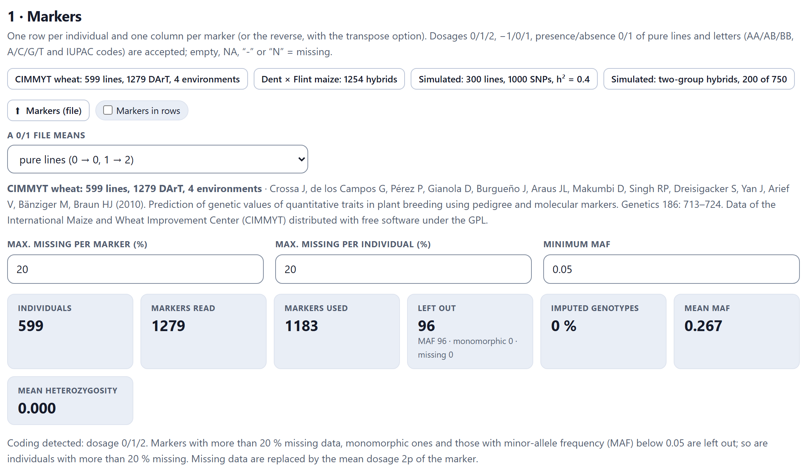
Quality control has three limits: the maximum missing rate per marker and per individual (20% each) and the minimum minor allele frequency (MAF, 0.05). Monomorphic markers are also removed, and missing data are replaced by the mean dosage of the marker, 2p. The tiles say how many individuals and markers remained, why each one was removed, what fraction was imputed, and the mean MAF and heterozygosity.
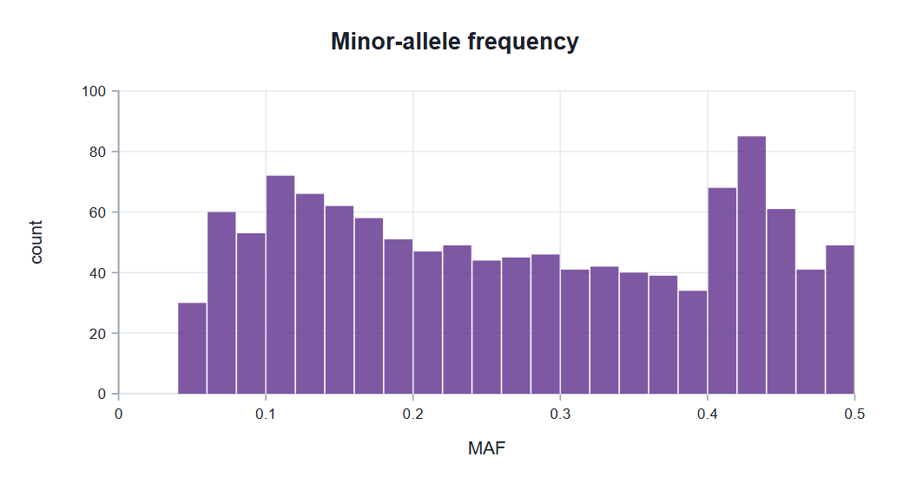
The card’s second figure shows the principal components of the G matrix, which reveal the structure of the population. When hybrids are loaded, each line is colored by its heterotic group (Figure 11.3). In the wheat, the first three components explain 15.4, 6.2 and 4.5% of the variation.
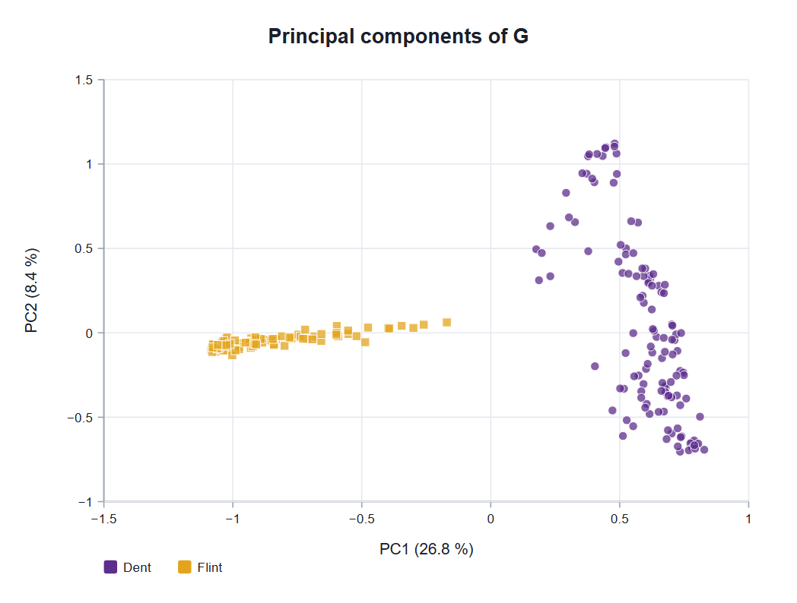
Card 2 · Genomic relationships builds VanRaden’s (2008) G matrix. The Matrix menu offers method 1, with centered markers, and method 2, with each marker standardized, which gives more weight to rare ones. Because the allele frequencies come from the data themselves, each row of G sums to zero and G cannot be inverted; the Ridge λ adds a small amount to the diagonal (by default, 0.001 times the mean diagonal).
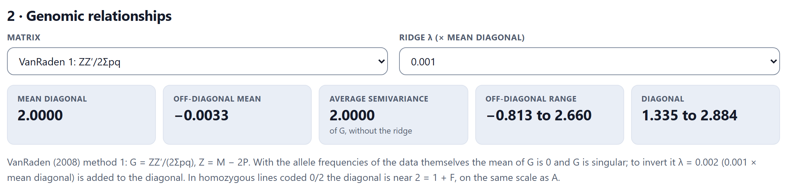
If Block 10 has a pedigree that includes every individual with markers, the menu Weight of the pedigree (Block 10) appears, which blends (1 − w)G + wA, along with a figure that compares G against A pair by pair. The blend smooths G when there are few markers (VanRaden, 2008; Aguilar and colleagues, 2010); the comparison uncovers pedigree errors, such as an individual whose genomic relationship with its supposed sire is close to zero.
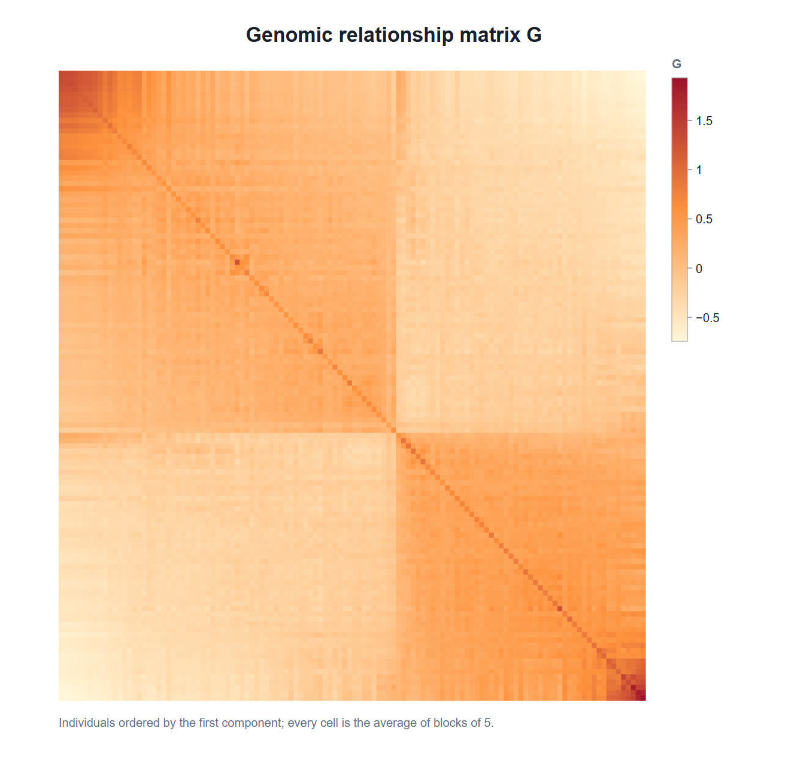
Card 3 · GBLUP: genomic values has two menus. Phenotypes says where they come from: those loaded with the example, those of a file (Phenotypes (file: identifier and traits), with the identifier in the first column) or the Block 3 trial. With the trial, the model is fitted in one stage on the plots, with environments and replicates fixed and the interaction with the environment random if there are replicates within each environment. The card reports how many entries have markers; the rest are left out. Trait picks the trait, and Fit GBLUP solves.
ASV is the average semivariance of K (Legarra, 2016; Feldmann and colleagues, 2022): it converts σ²g into the genetic variance among the individuals analyzed. In pure lines it is almost 2, because the variance among lines is twice that of a non-inbred population.
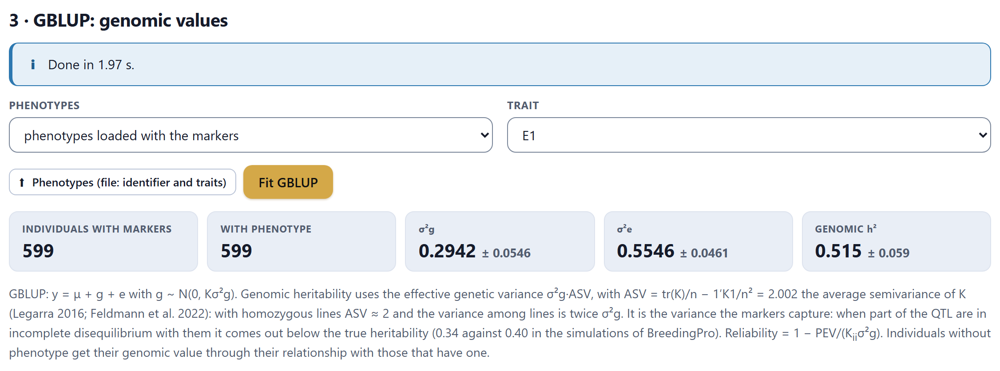
The genomic heritability is the one the markers capture. If some of the QTL are not in linkage disequilibrium with the panel, it comes out lower than the true one: in the simulated example, with 60 QTL off the panel and h² = 0.40, it gives 0.385 ± 0.088.
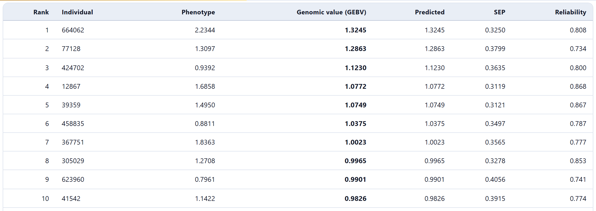
The table sorts the individuals by their genomic value and gives the phenotype, the predicted value (mean plus genomic value), the standard error of prediction and the reliability, 1 − PEV/(Kiiσ²g); in the wheat it ranges from 0.60 to 0.96. An individual without a phenotype also receives its value, from its relationship with those that have one, and its row is highlighted: this is how lines not yet sown are predicted.
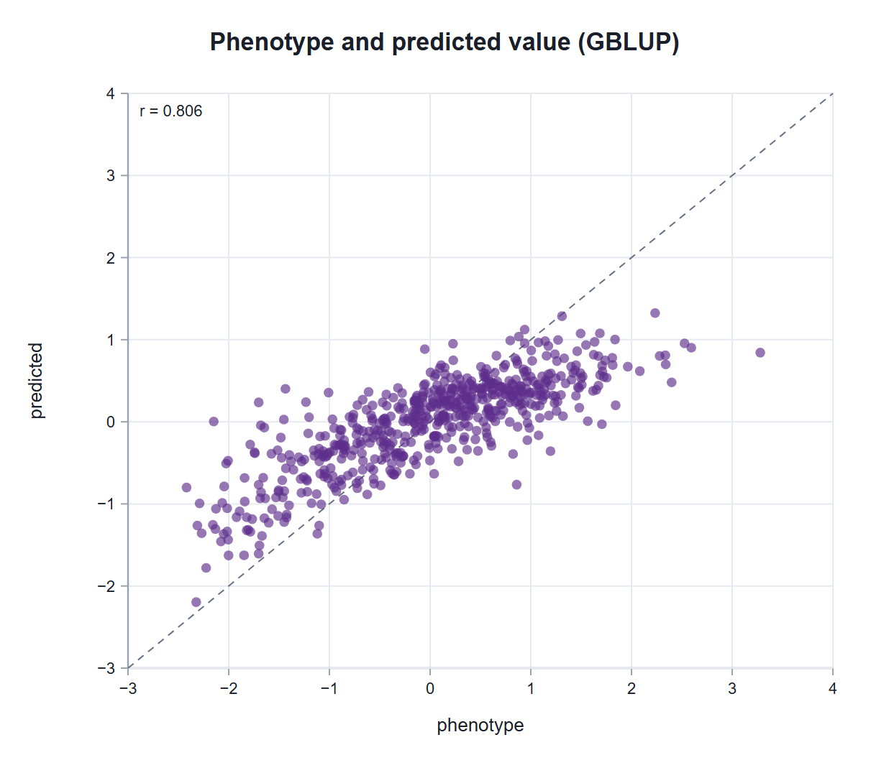
Marker effects. GBLUP is equivalent to ridge regression on all the markers (RR-BLUP; Meuwissen, Hayes and Goddard, 2001), and the effect of each marker is recovered from the genomic values: β̂ = Z′K−1ĝ/(2Σpq). The figure plots them in absolute value in the order of the file, and the folded box The 15 largest effects lists them with their allele frequency.
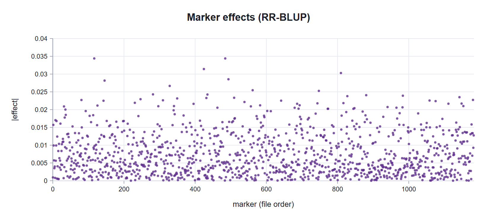
GBLUP spreads the effect of a QTL among all the markers in disequilibrium with it, and shrinks them all equally. A marker with a large effect deserves a look, not a conclusion: association is tested with other methods. Because of the ridge λ, the effects reproduce the genomic values almost exactly: Zβ̂ = ĝ − λK−1ĝ.
What matters about a genomic model is how well it predicts individuals that were not evaluated. Card 4 · Cross-validation and response per year splits the individuals with phenotypes into Folds (2, 5 or 10), predicts each fold with a model fitted without it and repeats the split as many times as Replicates says. It is the CV1 scheme of Burgueño and colleagues (2012): new individuals. The checkbox Re-estimate the variances in every training set, ticked by default, refits REML without the test fold; estimating them beforehand with all the data inflates the predictive ability. Compare with the pedigree (A) adds the same exercise with A, if Block 10 has the pedigree.
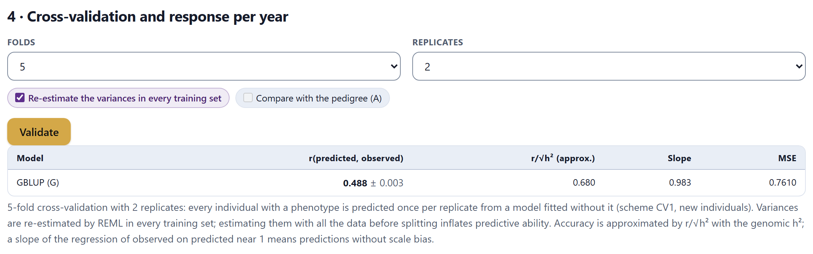
The table gives the predictive ability r(predicted, observed), with its deviation among replicates; the approximate accuracy, r/√h², which corrects for the noise of the phenotype it is compared with; the slope of the regression of observed on predicted, whose value close to 1 indicates that the predictions neither exaggerate nor shrink the differences; and the mean squared error. A figure plots each replicate.
In the simulated lines, the validation gives r = 0.320 and r/√h² = 0.516; the correlation with the true breeding value, which is unknown in real data, is 0.510. In 15 simulated populations, r/√h² overstated the true accuracy by only 0.015 on average.
Response per year. Below, the card compares phenotypic with genomic selection in gain per year, which is where genomics wins: its cycle is shorter even if its accuracy is lower (Heffner and colleagues, 2010). The fields are filled from the GBLUP fit and can be changed: Proportion selected, σA (by default, √(σ²g·ASV)), Phenotypic accuracy (h) (by default, √h²) and the years per cycle of each scheme. The genomic accuracy comes from the validation.
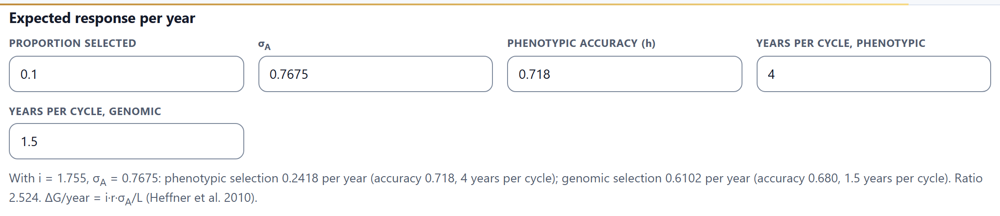
The ratio depends almost entirely on the years per cycle: with equal cycles, genomic selection would gain less (0.680 against 0.718 accuracy). That is why the calculation makes sense only with the program’s real cycles.
In a hybrid program, a small fraction of the possible crosses between two heterotic groups is evaluated. Card 5 · Hybrid prediction predicts all the others. It takes a table with one row per evaluated hybrid: the line of group 1, that of group 2 and the traits (adjusted means); the names of the first two columns are those of the groups. The markers of all the lines go in card 1.
K1 and K2 are the genomic relationships within each group, computed with that group’s frequencies (Bernardo, 1994; Technow and colleagues, 2014). An untested hybrid is predicted with the GCA of its two lines, and with the SCA if the checkbox Include the SCA (K₁ ⊗ K₂) is ticked. With more than 700 evaluated hybrids, that checkbox is disabled: the SCA kernel would be too large to solve exactly in the browser.
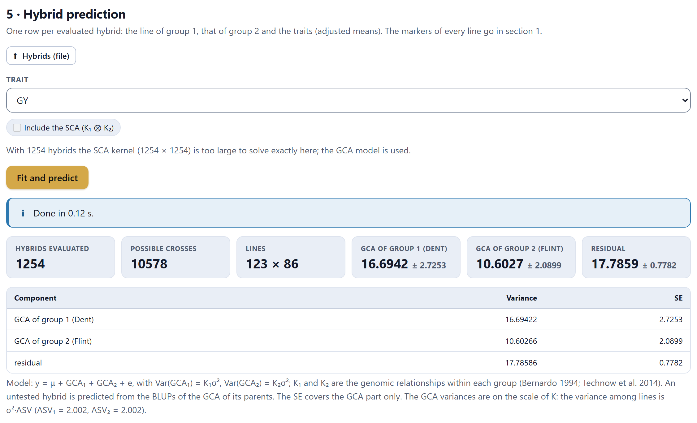
The trait is GY, grain yield. The GCA variances are on the scale of K; the variance among lines is σ²·ASV, and the note gives the ASV of each group. The table Best untested single crosses ranks the 9,324 crosses that were not sown.
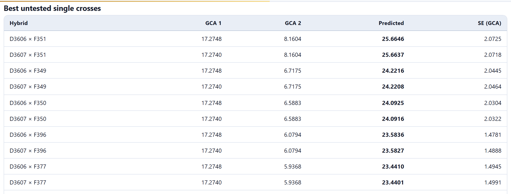
The standard error in the table includes only the GCA part. When two lines are almost identical, such as D3606 and D3607, keep only one: their crosses will give practically the same.
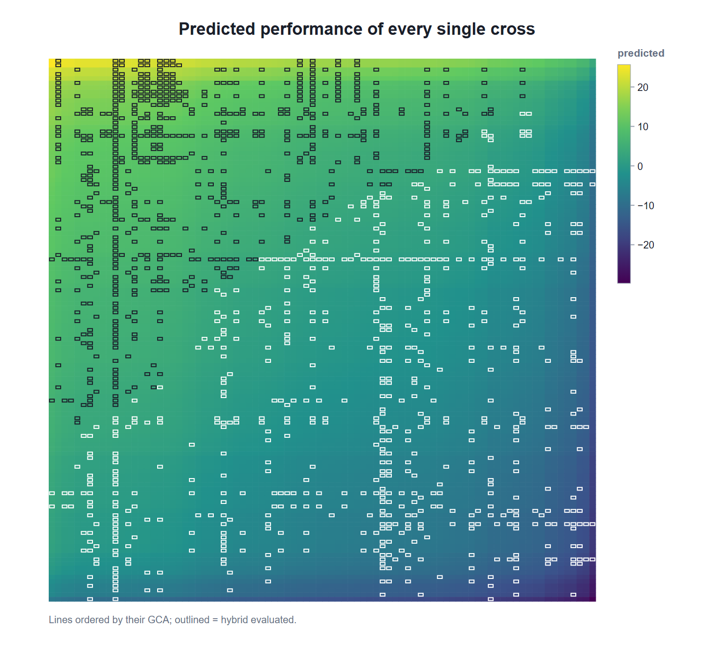
A second figure, not shown here, compares observed with predicted values in the evaluated hybrids. In the simulated example, with SCA, its variance is estimated as 0 (on the boundary), and the correlation of the predictions with the true value of the 550 untested crosses is 0.780.
Validate hybrids runs two 5-fold schemes, repeated as many times as Replicates of 5 folds says (1, 2 or 5). In the first, hybrids are set aside at random; in the second, lines with all their hybrids (Technow and colleagues, 2014). The predictions are grouped by how many parents of the test hybrid had other hybrids in the training set: T2 (both), T1 (one) and T0 (none). T0 is the hardest and most useful case: predicting crosses of new lines, solely from their relationship with the evaluated ones.
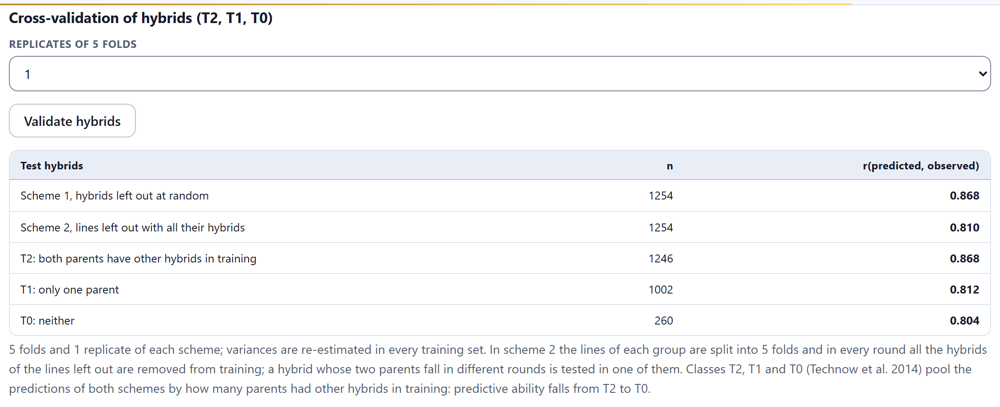
In the simulated example the drop is sharp, as expected when new lines have no close relatives among the evaluated ones: 0.668 in T2, 0.328 in T1 and −0.074 in T0, with only 35 hybrids in that class. With the true values, 0.802, 0.454 and −0.094. GCA predicts well when the lines already have evaluated hybrids; for new lines, it depends on how much they resemble those that do.
The last box predicts crosses of three and four lines with Jenkins’s (1934) rules: a three-way cross (A×B)×C with ½(AC + BC) and a double cross (A×B)×(C×D) with the average of the four nonparental single crosses AC, AD, BC and BD. You write one cross per line, with the lines on each side from different groups; when the model is fitted, the app proposes three with the best lines.
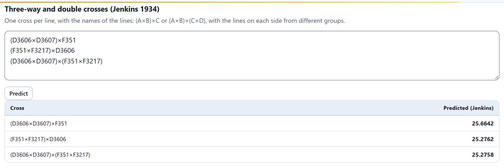
With the wheat, G (methods 1 and 2), its principal components, the REML components and the 599 genomic values agree with a reconstruction that maximizes the restricted likelihood with a general-purpose optimizer and solves Henderson’s equations directly (differences of 10−8 or less). With the maize, the GCA variances 16.6942 and 10.6027 and the residual 17.7859, the 12 untested crosses that were checked and Jenkins’s rules agree just as well. In 40 simulated populations with a true heritability of 0.40, the genomic heritability averaged 0.344: the markers captured 85% of the genetic variance, as the note of card 3 warns.
Card 6 · Assumptions, formulas and references summarizes genomic relationships, GBLUP and RR-BLUP, cross-validation and hybrid prediction, with their references. Results (.xlsx) downloads, each on its own sheet, the frequencies and quality of each marker, the G matrix (up to 1,500 individuals), the genomic values, the marker effects, the validation of each replicate and the prediction of every single cross. Each figure has its download panel.
Continue takes you to Block 12, the report, which gathers the analyses of all the blocks; ← BLUP returns to Block 10.